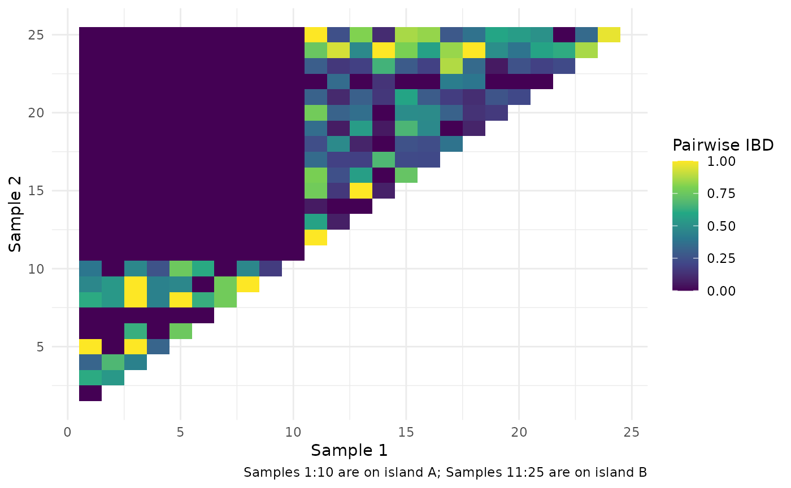

vignettes/spatial_extension.Rmd
spatial_extension.Rmd
library(polySimIBD)
library(ggplot2)
library(tidygraph) # useful for manipulations & visaulizations
#>
#> Attaching package: 'tidygraph'
#> The following object is masked from 'package:stats':
#>
#> filterWe extend the discrete-loci, discrete-time structured Wright Fisher model for space by considering spatial demes as a collection of hosts. Hosts move between demes based on the migration matrix M. In line with the assumptions of the Wright-Fisher, the number of hosts within the deme (i.e. deme size) does not change over time. As a result, there are two levels of “structure”: (1) Hosts which capture complexity of infection; (2) Discrete Locations that contain a collection of hosts (i.e. spatial deme, or “macrodeme”).
The full mathematical formulation of the nonspatial model can be found in the Supplementary Section of Verity, Aydemir, Brazeau et al. Nat Comms 2020 (PMC7192906). The spatial extension to the model is described in Brazeau et al. Biorxiv.
In brief, we assume that each deme (hereafter macrodeme) is a subpopulation within a very large population (\(\iota \in \nu\), where \(\iota\) is an individual macrodeme and \(\nu\) is the total number of macrodemes in the entire population) and that each macrodeme represents a collection of individual hosts. Then, as before, let each individual host be represented by a deme within a given macrodeme (\(i \in N_{\iota}\), where \(i\) is an individual host and \(N_{\iota}\) is the total host population for that macrodeme).
We then allow the \(j\) parasites (that reside within the host deme) to mate at random with the previous generation of parasites (\(t_{1-}\)) and produce a large number of parasite progeny. During mating, genetic recombination has the potential to occur based on the length of the genome and the recombination rate, \(\rho\). Progeny are then allowed to move to a new macrodeme or stay in the current macrodeme based on the migration matrix, \(\mathbf{M}\). Within a given macrodeme, the progeny are then allowed migrate to a new host or stay within the same host with a probability of \(\frac{m}{N_{\iota}}\). Finally - as before - progeny are culled down to a smaller number of parasites per host by drawing from a Poisson distribution with a mean COI. This process produces the next generation of parasites within hosts at given discrete locations. In essence, the non-spatial and spatial simulator only differ by an additional hierarchical level of spatial “macrodemes”.
As part of the Wright-Fisher framework, for each generation a new set of parents are drawn. As such, the migration matrix is parameterized to look where parents originated versus where progeny may move, or put more simply, the migration matrix represents “where one came from” versus “where one is headed”. As such, this is a “to-from” migration matrix, with the origin specified as columns and destination in rows
Separately, please note is that the if you are using the migration matrix as a probability matrix, rows must sum to 1 (valid marginal probability); otherwise, values will be assumed to be rates and converted to probabilities. The default value (1x1 matrix) of 1 indicates the non-spatial model.
Here, we will simulate a case of two island populations (population A vs. B) that are separated by a barrier to gene flow (i.e. there are no connections between populations A and B).
Run the simulation:
# vectors must be ordered for population A and B
demesizes <- c(10, 15)
coimeans <- c(1.25, 1.25)
m <- c(0.25, 0.25)
migr_dist_mat <- matrix(0, ncol = 2, nrow = 2)
diag(migr_dist_mat) <- 100
swf <- polySimIBD::sim_swf(pos = sort(sample(1:1e3, size = 50)),
N = demesizes,
m = m,
mean_coi = coimeans,
migr_mat = migr_dist_mat,
rho = 1e-2,
tlim = 10)
#> completed in 0.000616 secondsPull out the ARG and then calculate the pairwise IBD.
ARG <- polySimIBD::get_arg(swf)
#> completed in 0.000509 secondsNext, calculate pairwise IBD for all combinations.
# here we are going to get all the pairwise IBD combinations for our hosts
adj_graph <- t(combn(x = c(1:sum(demesizes)), m = 2)) %>%
tibble::as_tibble(., .name_repair = "minimal") %>%
magrittr::set_colnames(c("smpl1", "smpl2")) %>%
dplyr::mutate(pairwiseIBD = purrr::map2_dbl(.x = smpl1, .y = smpl2, .f = function(x, y){
quiet(polySimIBD::get_bvibd(swf = swf, host_index = c(x,y)
))
}))
# N.B. quiet is purely for aesthetic of vignette and is not needed in the above commandLet’s visualize our simple scenarios
adj_graph %>%
ggplot() +
geom_tile(aes(x = smpl1, y = smpl2, fill = pairwiseIBD)) +
scale_fill_viridis_c("Pairwise IBD") +
xlab("Sample 1") + ylab("Sample 2") +
labs(caption = "Samples 1:10 are on island A; Samples 11:25 are on island B") +
theme_minimal()
As can be seen from the figure, samples 1-10, which reside on island A have no relatedness to samples 11-25 that reside on island by B, as they have been completely isolated through our migration matrix.